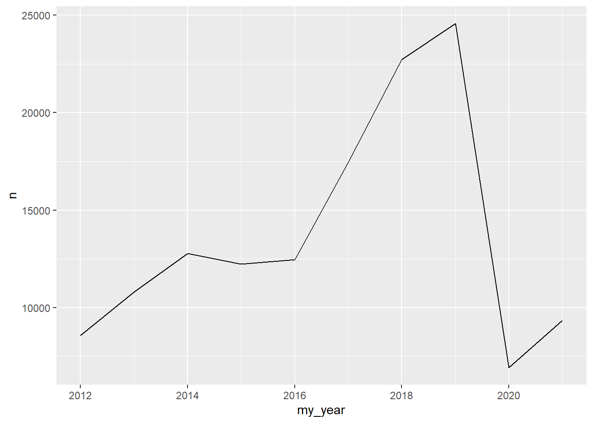
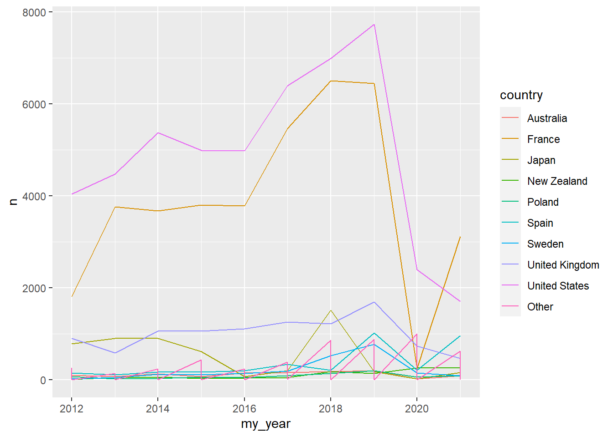
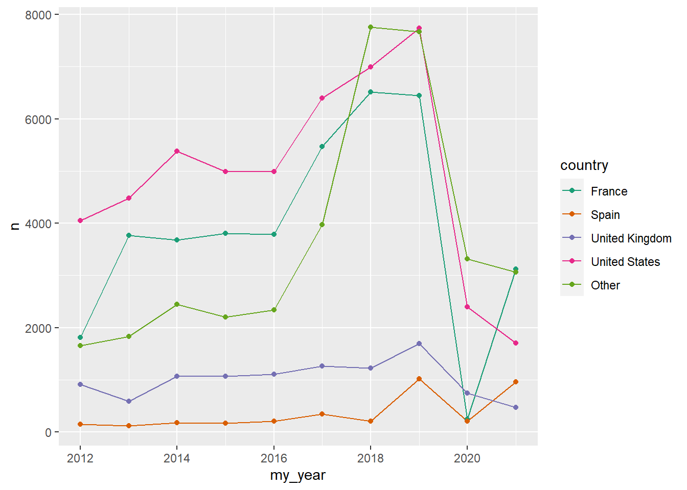
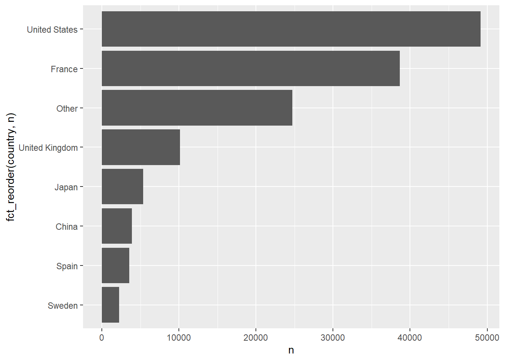
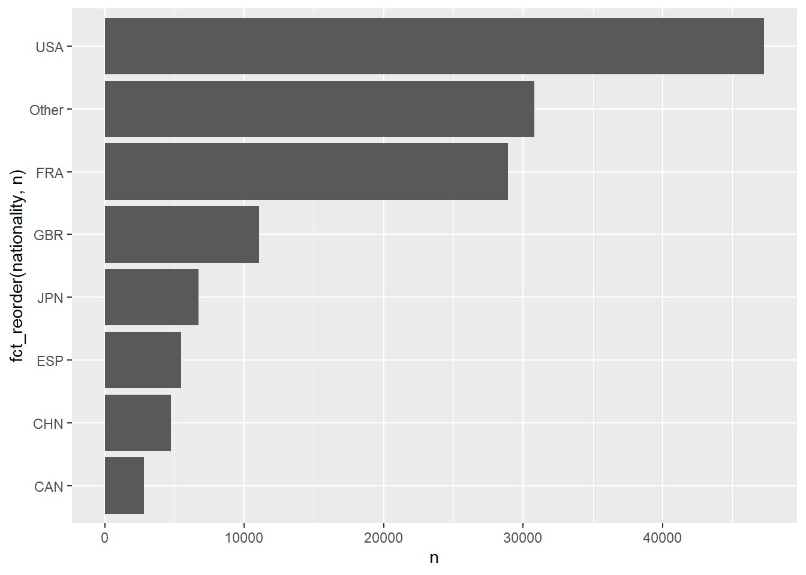
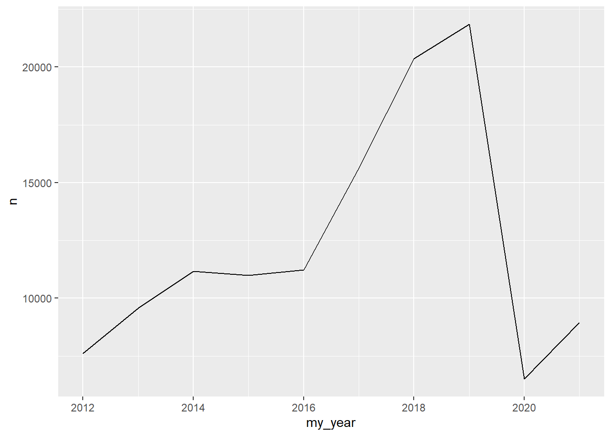
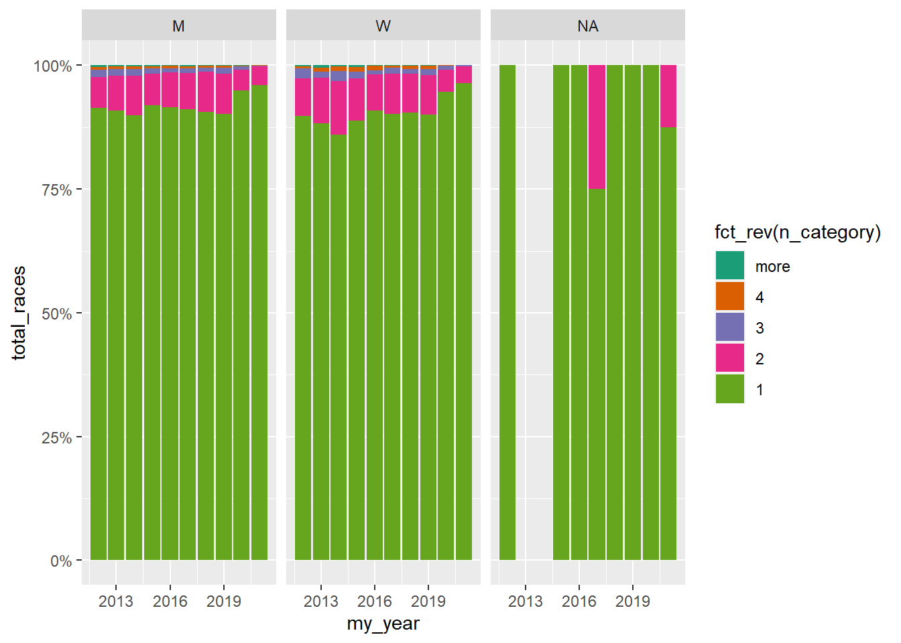
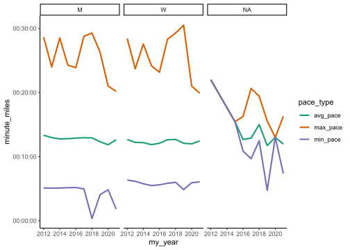
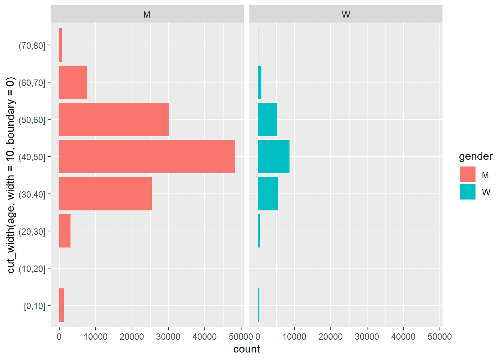
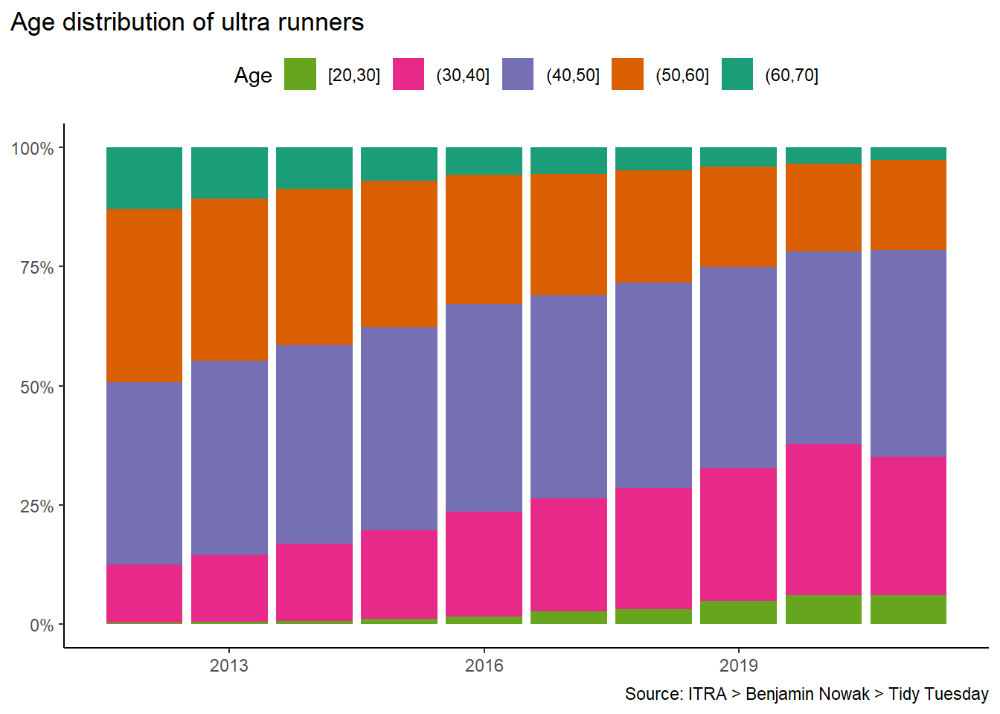

library(tidyverse)
library(skimr)example EDA
project
import data
wrangle data
join data
visualize data
interactivity (See: Interactivity with Quarto & ObservableJS)
models (See: video)
Import data
The data come from a TidyTuesday, a weekly social learning project dedicated to gaining practical experience with R and data science. In this case the TidyTuesday data are based on International Trail Running Association (ITRA) data but inspired by Benjamin Nowak, . We will use the TidyTuesday data that are on GitHub. Nowak’s data are also available on GitHub.
race_df <- read_csv("https://raw.githubusercontent.com/rfordatascience/tidytuesday/master/data/2021/2021-10-26/race.csv")Rows: 1207 Columns: 13
── Column specification ────────────────────────────────────────────────────────
Delimiter: ","
chr (5): event, race, city, country, participation
dbl (6): race_year_id, distance, elevation_gain, elevation_loss, aid_statio...
date (1): date
time (1): start_time
ℹ Use `spec()` to retrieve the full column specification for this data.
ℹ Specify the column types or set `show_col_types = FALSE` to quiet this message.rank_df <- read_csv("https://raw.githubusercontent.com/rfordatascience/tidytuesday/master/data/2021/2021-10-26/ultra_rankings.csv")Rows: 137803 Columns: 8
── Column specification ────────────────────────────────────────────────────────
Delimiter: ","
chr (4): runner, time, gender, nationality
dbl (4): race_year_id, rank, age, time_in_seconds
ℹ Use `spec()` to retrieve the full column specification for this data.
ℹ Specify the column types or set `show_col_types = FALSE` to quiet this message.glimpse(race_df)Rows: 1,207
Columns: 13
$ race_year_id <dbl> 68140, 72496, 69855, 67856, 70469, 66887, 67851, 68241,…
$ event <chr> "Peak District Ultras", "UTMB®", "Grand Raid des Pyréné…
$ race <chr> "Millstone 100", "UTMB®", "Ultra Tour 160", "PERSENK UL…
$ city <chr> "Castleton", "Chamonix", "vielle-Aure", "Asenovgrad", "…
$ country <chr> "United Kingdom", "France", "France", "Bulgaria", "Turk…
$ date <date> 2021-09-03, 2021-08-27, 2021-08-20, 2021-08-20, 2021-0…
$ start_time <time> 19:00:00, 17:00:00, 05:00:00, 18:00:00, 18:00:00, 17:0…
$ participation <chr> "solo", "Solo", "solo", "solo", "solo", "solo", "solo",…
$ distance <dbl> 166.9, 170.7, 167.0, 164.0, 159.9, 159.9, 163.8, 163.9,…
$ elevation_gain <dbl> 4520, 9930, 9980, 7490, 100, 9850, 5460, 4630, 6410, 31…
$ elevation_loss <dbl> -4520, -9930, -9980, -7500, -100, -9850, -5460, -4660, …
$ aid_stations <dbl> 10, 11, 13, 13, 12, 15, 5, 8, 13, 23, 13, 5, 12, 15, 0,…
$ participants <dbl> 150, 2300, 600, 150, 0, 300, 0, 200, 120, 100, 300, 50,…glimpse(rank_df)Rows: 137,803
Columns: 8
$ race_year_id <dbl> 68140, 68140, 68140, 68140, 68140, 68140, 68140, 68140…
$ rank <dbl> 1, 2, 3, 4, 5, 6, 7, 8, 9, 10, 11, 12, 13, NA, NA, NA,…
$ runner <chr> "VERHEUL Jasper", "MOULDING JON", "RICHARDSON Phill", …
$ time <chr> "26H 35M 25S", "27H 0M 29S", "28H 49M 7S", "30H 53M 37…
$ age <dbl> 30, 43, 38, 55, 48, 31, 55, 40, 47, 29, 48, 47, 52, 49…
$ gender <chr> "M", "M", "M", "W", "W", "M", "W", "W", "M", "M", "M",…
$ nationality <chr> "GBR", "GBR", "GBR", "GBR", "GBR", "GBR", "GBR", "GBR"…
$ time_in_seconds <dbl> 95725, 97229, 103747, 111217, 117981, 118000, 120601, …EDA with skimr
skim(race_df)| Name | race_df |
| Number of rows | 1207 |
| Number of columns | 13 |
| _______________________ | |
| Column type frequency: | |
| character | 5 |
| Date | 1 |
| difftime | 1 |
| numeric | 6 |
| ________________________ | |
| Group variables | None |
Variable type: character
| skim_variable | n_missing | complete_rate | min | max | empty | n_unique | whitespace |
|---|---|---|---|---|---|---|---|
| event | 0 | 1.00 | 4 | 57 | 0 | 435 | 0 |
| race | 0 | 1.00 | 3 | 63 | 0 | 371 | 0 |
| city | 172 | 0.86 | 2 | 30 | 0 | 308 | 0 |
| country | 4 | 1.00 | 4 | 17 | 0 | 60 | 0 |
| participation | 0 | 1.00 | 4 | 5 | 0 | 4 | 0 |
Variable type: Date
| skim_variable | n_missing | complete_rate | min | max | median | n_unique |
|---|---|---|---|---|---|---|
| date | 0 | 1 | 2012-01-14 | 2021-09-03 | 2017-09-30 | 711 |
Variable type: difftime
| skim_variable | n_missing | complete_rate | min | max | median | n_unique |
|---|---|---|---|---|---|---|
| start_time | 0 | 1 | 0 secs | 82800 secs | 05:00:00 | 39 |
Variable type: numeric
| skim_variable | n_missing | complete_rate | mean | sd | p0 | p25 | p50 | p75 | p100 | hist |
|---|---|---|---|---|---|---|---|---|---|---|
| race_year_id | 0 | 1 | 27889.65 | 20689.90 | 2320 | 9813.5 | 23565.0 | 42686.00 | 72496.0 | ▇▃▃▂▂ |
| distance | 0 | 1 | 152.62 | 39.88 | 0 | 160.1 | 161.5 | 165.15 | 179.1 | ▁▁▁▁▇ |
| elevation_gain | 0 | 1 | 5294.79 | 2872.29 | 0 | 3210.0 | 5420.0 | 7145.00 | 14430.0 | ▅▇▇▂▁ |
| elevation_loss | 0 | 1 | -5317.01 | 2899.12 | -14440 | -7206.5 | -5420.0 | -3220.00 | 0.0 | ▁▂▇▇▅ |
| aid_stations | 0 | 1 | 8.63 | 7.63 | 0 | 0.0 | 9.0 | 14.00 | 56.0 | ▇▆▁▁▁ |
| participants | 0 | 1 | 120.49 | 281.83 | 0 | 0.0 | 21.0 | 150.00 | 2900.0 | ▇▁▁▁▁ |
race_df |>
count(country, sort = TRUE) |>
filter(str_detect(country, regex("Ke", ignore_case = TRUE)))# A tibble: 1 × 2
country n
<chr> <int>
1 Turkey 8race_df |>
filter(country == "Turkey")# A tibble: 8 × 13
race_ye…¹ event race city country date start…² parti…³ dista…⁴ eleva…⁵
<dbl> <chr> <chr> <chr> <chr> <date> <time> <chr> <dbl> <dbl>
1 70469 Runf… 100 … uluk… Turkey 2021-08-20 18:00 solo 160. 100
2 66425 Izni… 160 K Iznik Turkey 2021-08-06 18:00 solo 149. 2930
3 59481 Runf… 100 … uluk… Turkey 2020-08-29 18:00 solo 160. 2770
4 43459 Garm… 100 … uluk… Turkey 2019-08-30 18:00 solo 160. 2830
5 39229 Izni… 160 K Iznik Turkey 2019-04-19 20:00 solo 162. 4470
6 35953 Lyci… LYUM… İsta… Turkey 2018-09-28 00:00 solo 174. 6070
7 31407 Garm… 100 … uluk… Turkey 2018-07-27 18:00 solo 164. 700
8 22779 Garm… Ultr… uluk… Turkey 2017-07-28 18:00 solo 161. 610
# … with 3 more variables: elevation_loss <dbl>, aid_stations <dbl>,
# participants <dbl>, and abbreviated variable names ¹race_year_id,
# ²start_time, ³participation, ⁴distance, ⁵elevation_gainrace_df |>
count(participation, sort = TRUE)# A tibble: 4 × 2
participation n
<chr> <int>
1 solo 1152
2 Solo 41
3 team 13
4 relay 1race_df |>
count(participants, sort = TRUE)# A tibble: 74 × 2
participants n
<dbl> <int>
1 0 582
2 100 93
3 50 69
4 300 62
5 150 59
6 200 58
7 30 25
8 250 25
9 400 25
10 500 23
# … with 64 more rowsskim(rank_df)| Name | rank_df |
| Number of rows | 137803 |
| Number of columns | 8 |
| _______________________ | |
| Column type frequency: | |
| character | 4 |
| numeric | 4 |
| ________________________ | |
| Group variables | None |
Variable type: character
| skim_variable | n_missing | complete_rate | min | max | empty | n_unique | whitespace |
|---|---|---|---|---|---|---|---|
| runner | 0 | 1.00 | 3 | 52 | 0 | 73629 | 0 |
| time | 17791 | 0.87 | 8 | 11 | 0 | 72840 | 0 |
| gender | 30 | 1.00 | 1 | 1 | 0 | 2 | 0 |
| nationality | 0 | 1.00 | 3 | 3 | 0 | 133 | 0 |
Variable type: numeric
| skim_variable | n_missing | complete_rate | mean | sd | p0 | p25 | p50 | p75 | p100 | hist |
|---|---|---|---|---|---|---|---|---|---|---|
| race_year_id | 0 | 1.00 | 26678.70 | 20156.18 | 2320 | 8670 | 21795 | 40621 | 72496 | ▇▃▃▂▂ |
| rank | 17791 | 0.87 | 253.56 | 390.80 | 1 | 31 | 87 | 235 | 1962 | ▇▁▁▁▁ |
| age | 0 | 1.00 | 46.25 | 10.11 | 0 | 40 | 46 | 53 | 133 | ▁▇▂▁▁ |
| time_in_seconds | 17791 | 0.87 | 122358.26 | 37234.38 | 3600 | 96566 | 114167 | 148020 | 296806 | ▁▇▆▁▁ |
rank_df |>
filter(str_detect(nationality, regex("ken", ignore_case = TRUE)))# A tibble: 5 × 8
race_year_id rank runner time age gender national…¹ time_…²
<dbl> <dbl> <chr> <chr> <dbl> <chr> <chr> <dbl>
1 25073 1167 FINN Adharanand 43H 9M 7S 47 M KEN 155347
2 27555 NA NEWLAND Peter <NA> 51 M KEN NA
3 19705 NA NEWLAND Peter <NA> 51 M KEN NA
4 18229 102 NOWAK Sean 26H 17M 33S 45 M KEN 94653
5 10903 75 POHLMAN Eric 30H 2M 49S 39 M KEN 108169
# … with abbreviated variable names ¹nationality, ²time_in_secondsrank_df |>
arrange(rank)# A tibble: 137,803 × 8
race_year_id rank runner time age gender nation…¹ time_…²
<dbl> <dbl> <chr> <chr> <dbl> <chr> <chr> <dbl>
1 68140 1 VERHEUL Jasper 26H 35M 25S 30 M GBR 95725
2 72496 1 D HAENE Francois 20H 45M 59S 36 M FRA 74759
3 69855 1 PIPITONE Anthony 24H 46M 23S 36 M FRA 89183
4 67856 1 MARINOV Dimitar 20H 41M 6S 37 M BUL 74466
5 67856 1 Minkov Hristo 20H 41M 6S 20 M BUL 74466
6 70469 1 SEMIZ Ferhat 18H 50M 44S 35 M TUR 67844
7 66887 1 GIRARD Matthieu 26H 24M 43S 49 M SUI 95083
8 67851 1 HERMANSEN Didrik 19H 52M 51S 41 M NOR 71571
9 68241 1 LEJEUNE Sylvain 17H 31M 24S 34 M BEL 63084
10 70241 1 GAILLARD Benoit 21H 15M 10S 37 M FRA 76510
# … with 137,793 more rows, and abbreviated variable names ¹nationality,
# ²time_in_secondsrank_df |>
count(rank, sort = TRUE)# A tibble: 1,963 × 2
rank n
<dbl> <int>
1 NA 17791
2 1 1237
3 2 1211
4 3 1178
5 4 1178
6 5 1141
7 6 1138
8 7 1125
9 8 1113
10 9 1094
# … with 1,953 more rowsrank_df |>
drop_na(rank) |>
count(rank, gender, age, sort = TRUE)# A tibble: 39,194 × 4
rank gender age n
<dbl> <chr> <dbl> <int>
1 1 M 36 73
2 2 M 42 72
3 4 M 41 70
4 1 M 42 67
5 4 M 44 66
6 1 M 39 64
7 2 M 40 63
8 1 M 43 62
9 1 M 41 60
10 2 M 39 60
# … with 39,184 more rowsrace_df |>
count(distance, sort = TRUE)# A tibble: 197 × 2
distance n
<dbl> <int>
1 161 157
2 0 74
3 160 28
4 162. 18
5 162. 18
6 161. 17
7 162. 17
8 163 17
9 155 16
10 162. 16
# … with 187 more rowsrank_df |>
filter(race_year_id == 41449)# A tibble: 166 × 8
race_year_id rank runner time age gender nationa…¹ time_…²
<dbl> <dbl> <chr> <chr> <dbl> <chr> <chr> <dbl>
1 41449 1 NOLL Jon 16H 17M 31S 36 M USA 58651
2 41449 2 HANSON Jon 19H 21M 24S 45 M USA 69684
3 41449 3 LUEBKE James 20H 39M 25S 38 M USA 74365
4 41449 4 RAUEN Tom 20H 41M 56S 38 M USA 74516
5 41449 5 KEELER Jason 20H 43M 9S 39 M USA 74589
6 41449 6 BUCKLEY Stacey 20H 44M 8S 45 W USA 74648
7 41449 7 HANSEN David 20H 48M 19S 36 M USA 74899
8 41449 8 ADAMSKI Timothy 21H 28M 17S 33 M USA 77297
9 41449 9 WONNEBERG Lisa 21H 33M 55S 40 W USA 77635
10 41449 10 BREY Curt 21H 52M 26S 42 M USA 78746
# … with 156 more rows, and abbreviated variable names ¹nationality,
# ²time_in_secondsrace_df |>
filter(race_year_id == 41449)# A tibble: 1 × 13
race_ye…¹ event race city country date start…² parti…³ dista…⁴ eleva…⁵
<dbl> <chr> <chr> <chr> <chr> <date> <time> <chr> <dbl> <dbl>
1 41449 Kett… 100 … LaGr… United… 2019-06-01 06:00 solo 161 2650
# … with 3 more variables: elevation_loss <dbl>, aid_stations <dbl>,
# participants <dbl>, and abbreviated variable names ¹race_year_id,
# ²start_time, ³participation, ⁴distance, ⁵elevation_gainrace_df |>
filter(distance == 161)# A tibble: 157 × 13
race_y…¹ event race city country date start…² parti…³ dista…⁴ eleva…⁵
<dbl> <chr> <chr> <chr> <chr> <date> <time> <chr> <dbl> <dbl>
1 68416 West… West… Aubu… United… 2021-06-26 05:00 solo 161 5850
2 69523 Jian… 100M… Ning… China 2021-04-16 14:00 solo 161 7060
3 68010 UTCL… UTCL… Bogor Indone… 2021-01-09 06:00 solo 161 6420
4 53633 Born… 100 … Kota… Malays… 2020-03-14 06:00 solo 161 7620
5 60007 HURT… HURT… <NA> United… 2020-01-18 00:00 solo 161 8200
6 41449 Kett… 100 … LaGr… United… 2019-06-01 06:00 solo 161 2650
7 43893 HURT… HURT… <NA> United… 2019-01-19 00:00 solo 161 8200
8 41951 GHOS… 100 … <NA> United… 2018-10-20 00:00 solo 161 1610
9 36961 WASA… WASA… <NA> United… 2018-09-07 00:00 solo 161 8215
10 36963 CASC… Casc… <NA> United… 2018-08-18 00:00 solo 161 6700
# … with 147 more rows, 3 more variables: elevation_loss <dbl>,
# aid_stations <dbl>, participants <dbl>, and abbreviated variable names
# ¹race_year_id, ²start_time, ³participation, ⁴distance, ⁵elevation_gainrace_df# A tibble: 1,207 × 13
race_y…¹ event race city country date start…² parti…³ dista…⁴ eleva…⁵
<dbl> <chr> <chr> <chr> <chr> <date> <time> <chr> <dbl> <dbl>
1 68140 Peak… Mill… Cast… United… 2021-09-03 19:00 solo 167. 4520
2 72496 UTMB® UTMB® Cham… France 2021-08-27 17:00 Solo 171. 9930
3 69855 Gran… Ultr… viel… France 2021-08-20 05:00 solo 167 9980
4 67856 Pers… PERS… Asen… Bulgar… 2021-08-20 18:00 solo 164 7490
5 70469 Runf… 100 … uluk… Turkey 2021-08-20 18:00 solo 160. 100
6 66887 Swis… 160KM Müns… Switze… 2021-08-15 17:00 solo 160. 9850
7 67851 Salo… Salo… Foll… Norway 2021-08-14 07:00 solo 164. 5460
8 68241 Ultr… 160KM Spa Belgium 2021-08-14 07:00 solo 164. 4630
9 70241 Québ… QMT-… Beau… Canada 2021-08-13 22:00 solo 159. 6410
10 69945 Bunk… BBUT… LIND… Sweden 2021-08-07 10:00 solo 164. 3100
# … with 1,197 more rows, 3 more variables: elevation_loss <dbl>,
# aid_stations <dbl>, participants <dbl>, and abbreviated variable names
# ¹race_year_id, ²start_time, ³participation, ⁴distance, ⁵elevation_gainrace_df |>
count(race, city, sort = TRUE)# A tibble: 484 × 3
race city n
<chr> <chr> <int>
1 Centurion North Downs Way 100 farnham 10
2 Centurion Thames Path 100 London 10
3 100 Mile Bandera 9
4 100 Mile Bergen 9
5 100 Mile Carsoncity 9
6 100 Mile Hudson 9
7 100 Miles FortMcDowell 9
8 Centurion Autumn 100 GoringOnThames 9
9 HURT 100 MILE ENDURANCE RUN <NA> 9
10 TEC 100 Miles Täby 9
# … with 474 more rowsrace_df |>
filter(race == "Centurion North Downs Way 100")# A tibble: 10 × 13
race_y…¹ event race city country date start…² parti…³ dista…⁴ eleva…⁵
<dbl> <chr> <chr> <chr> <chr> <date> <time> <chr> <dbl> <dbl>
1 67218 Cent… Cent… farn… United… 2021-08-07 06:00 solo 165. 3130
2 51393 Cent… Cent… farn… United… 2020-08-08 06:00 solo 168. 3440
3 40737 Cent… Cent… farn… United… 2019-08-03 06:00 solo 168 3420
4 25985 Cent… Cent… farn… United… 2018-08-04 06:00 solo 168 3420
5 15312 Cent… Cent… farn… United… 2017-08-05 06:00 solo 170. 3490
6 11486 Cent… Cent… farn… United… 2016-08-06 06:00 solo 170. 3490
7 8392 Cent… Cent… farn… United… 2015-08-08 00:00 solo 170. 3490
8 6241 Cent… Cent… farn… United… 2014-08-09 00:00 solo 174. 2460
9 4126 Cent… Cent… farn… United… 2013-08-10 00:00 solo 161 3030
10 2665 Cent… Cent… farn… United… 2012-08-11 00:00 solo 161 3030
# … with 3 more variables: elevation_loss <dbl>, aid_stations <dbl>,
# participants <dbl>, and abbreviated variable names ¹race_year_id,
# ²start_time, ³participation, ⁴distance, ⁵elevation_gainrace_df |>
filter(race_year_id == 68140)# A tibble: 1 × 13
race_ye…¹ event race city country date start…² parti…³ dista…⁴ eleva…⁵
<dbl> <chr> <chr> <chr> <chr> <date> <time> <chr> <dbl> <dbl>
1 68140 Peak… Mill… Cast… United… 2021-09-03 19:00 solo 167. 4520
# … with 3 more variables: elevation_loss <dbl>, aid_stations <dbl>,
# participants <dbl>, and abbreviated variable names ¹race_year_id,
# ²start_time, ³participation, ⁴distance, ⁵elevation_gainrace_df |>
filter(race == "Millstone 100")# A tibble: 1 × 13
race_ye…¹ event race city country date start…² parti…³ dista…⁴ eleva…⁵
<dbl> <chr> <chr> <chr> <chr> <date> <time> <chr> <dbl> <dbl>
1 68140 Peak… Mill… Cast… United… 2021-09-03 19:00 solo 167. 4520
# … with 3 more variables: elevation_loss <dbl>, aid_stations <dbl>,
# participants <dbl>, and abbreviated variable names ¹race_year_id,
# ²start_time, ³participation, ⁴distance, ⁵elevation_gainrace_df |>
filter(event == "Peak District Ultras")# A tibble: 1 × 13
race_ye…¹ event race city country date start…² parti…³ dista…⁴ eleva…⁵
<dbl> <chr> <chr> <chr> <chr> <date> <time> <chr> <dbl> <dbl>
1 68140 Peak… Mill… Cast… United… 2021-09-03 19:00 solo 167. 4520
# … with 3 more variables: elevation_loss <dbl>, aid_stations <dbl>,
# participants <dbl>, and abbreviated variable names ¹race_year_id,
# ²start_time, ³participation, ⁴distance, ⁵elevation_gainrace_df |>
count(race, sort = TRUE) # A tibble: 371 × 2
race n
<chr> <int>
1 100 Mile 156
2 100 Miles 73
3 100M 43
4 100 miles 27
5 100 MILES 22
6 160 Km 22
7 100Miles 12
8 100 Miler 10
9 Centurion North Downs Way 100 10
10 Centurion Thames Path 100 10
# … with 361 more rowsrace_df |>
count(city, sort = TRUE) # A tibble: 309 × 2
city n
<chr> <int>
1 <NA> 172
2 Edale 13
3 HongKong 11
4 Hudson 10
5 London 10
6 farnham 10
7 Bandera 9
8 Bergen 9
9 Carsoncity 9
10 FortMcDowell 9
# … with 299 more rowsrace_df |>
count(event, sort = TRUE) # A tibble: 435 × 2
event n
<chr> <int>
1 Burning River Endurance Run 10
2 Centurion North Downs Way 100 10
3 Centurion Thames Path 100 10
4 RUN RABBIT RUN 10
5 Antelope Island Buffalo Run 9
6 BEAR 100 9
7 Bryce Canyon 9
8 Cactus Rose 9
9 Centurion Autumn 100 9
10 Chiemgauer 100 9
# … with 425 more rowsrace_df |>
filter(event == "Burning River Endurance Run")# A tibble: 10 × 13
race_y…¹ event race city country date start…² parti…³ dista…⁴ eleva…⁵
<dbl> <chr> <chr> <chr> <chr> <date> <time> <chr> <dbl> <dbl>
1 69219 Burn… Burn… Huds… United… 2021-07-24 04:00 solo 164. 2700
2 58623 Burn… 100 … Huds… United… 2020-08-22 04:00 solo 164. 2700
3 40025 Burn… 100 … Huds… United… 2019-07-27 04:00 solo 164. 2700
4 27491 Burn… 100 … Huds… United… 2018-07-28 04:00 solo 164. 2610
5 18669 Burn… 100 … Huds… United… 2017-07-29 04:00 solo 165. 2610
6 11982 Burn… 100 … Huds… United… 2016-08-06 04:00 solo 163 2470
7 8728 Burn… 100 … Huds… United… 2015-07-25 00:00 solo 163 2470
8 7124 Burn… 100 … Huds… United… 2014-08-02 00:00 solo 163 2470
9 4303 Burn… 100 … Huds… United… 2013-07-27 00:00 solo 161 2470
10 2694 Burn… 100 … Huds… United… 2012-07-28 00:00 solo 161 2470
# … with 3 more variables: elevation_loss <dbl>, aid_stations <dbl>,
# participants <dbl>, and abbreviated variable names ¹race_year_id,
# ²start_time, ³participation, ⁴distance, ⁵elevation_gainVisualize, wrangle, and summarize
Here I’m using this State of Ultra Running report as a model to demonstrate some of the capabilities of R / Tidyverse
join datasets
Join, Assign, and Pipe
In this case I want to join the two data frames rank_df and race_df using the left_join() function.
I can assign the output of a “data pipe” (i.e. data sentence) to use in subsequent code-chunks. A common R / Tidyverse assignment operator is the <- characters. You can read this as “gets value from”.
Additionally, I’m using a pipe operator (|>) as a conjunction to connect functions. In this way I can form a data sentence. Many people call the data sentence a data pipe, or just a pipe. You may see another common pipe operator: %>%. \> and %>% are synonymous.
using dplyr::left_join() I combine the two data sets and then use {ggplot2} to create a line graph of participants by year.
my_df_joined <- rank_df |>
left_join(race_df, by = "race_year_id") |>
mutate(my_year = lubridate::year(date))Viz participants
Let’ make a quick line plot showing how many people participate in races each year. Here we have a date field this is also a date data-type. Data types are important and in this example using a data data-type means {ggplot2} will simplify our x-axis labels.
Here we use the {lubridate} package to help manage my date data-types. We also use {ggplot2} to generate a line graph as a time series via the {ggplot2} package and a geom_line() layer. Note that {ggplot2} uses the ‘+’ as the conjunction or pipe.
rank_df |>
left_join(race_df |> select(race_year_id, date), by = "race_year_id") |>
mutate(my_year = lubridate::year(date)) |>
count(my_year, sort = TRUE) |>
ggplot(aes(my_year, n)) +
geom_line()
by distance
Here I use count() in different ways to see what I can see. I comment out each attempt before settling on summarizing a table of total country participants by year.
my_df_joined |>
mutate(participation = str_to_lower(participation)) |>
# count(participation, sort = TRUE)
# count(city) |>
# count(race) |>
count(my_year, country, sort = TRUE)# A tibble: 333 × 3
my_year country n
<dbl> <chr> <int>
1 2019 United States 7735
2 2018 United States 6994
3 2018 France 6511
4 2019 France 6449
5 2017 United States 6397
6 2017 France 5470
7 2014 United States 5384
8 2015 United States 4990
9 2016 United States 4984
10 2013 United States 4481
# … with 323 more rowsmy_df_joined |>
mutate(participation = str_to_lower(participation)) |>
count(my_year, country, sort = TRUE) |>
drop_na(country) |>
mutate(country = fct_lump_prop(country, prop = .03)) |>
ggplot(aes(my_year, n)) +
geom_line(aes(color = country))
by country
I used fct_lump_prop() in the previous code-chunk to lump the country variable into categories by frequency. Here we refine the categories into specific levels. We are still mutating the country variable as a categorical factor; this time using the fct_other() function of {forcats} with some pre-defined levels (see the my_levels vector in the code-chunk below).
my_levels <- c("United States", "France", "United Kingdom", "Spain")
my_df_joined |>
mutate(country = fct_other(country, keep = my_levels)) |>
count(my_year, country, sort = TRUE) |>
drop_na(country) |>
ggplot(aes(my_year, n, color = country)) +
geom_line() +
geom_point() +
scale_color_brewer(palette = "Dark2") 
Country race-host
my_df_joined |>
drop_na(country) |>
mutate(country = fct_lump_n(country, n = 7)) |>
count(country, sort = TRUE) |>
ggplot(aes(x = n, y = fct_reorder(country, n))) +
geom_col()
Nationality of runner
my_df_joined |>
mutate(nationality = fct_lump_n(nationality, n = 7)) |>
count(nationality, sort = TRUE) |>
ggplot(aes(n, fct_reorder(nationality, n))) +
geom_col()
Unique participants
my_df_joined |>
distinct(my_year, runner) |>
count(my_year) |>
ggplot(aes(my_year, n)) +
geom_line()
Participant frequency separated by gender
Note the use of count, if_else, as.character, and group_by to transform the data for visualizing. Meanwhile, the visual bar graph is a proportional graph with the y-axis label by percentage. We do this by manipulating the plot scales. Scales are also used to choose colors from a predefined palette (i.e. “Dark2”.) Findally, we facet the plot by gender (See facet_wrap()).
my_df_joined |>
count(my_year, gender, runner, sort = TRUE) |>
mutate(n_category = if_else(n >= 5, "more", as.character(n))) |>
group_by(my_year) |>
mutate(total_races = sum(n)) |>
ungroup() |>
ggplot(aes(my_year, total_races)) +
geom_col(aes(fill = fct_rev(n_category)), position = "fill") +
scale_fill_brewer(palette = "Dark2") +
scale_y_continuous(labels = scales::percent) +
facet_wrap(vars(gender)) 
Pace per mile
We want to calculate a value for each runner’s pace (i.e. minute_miles). We have to create and convert a character data-type of the time variable into a numeric floating point (or dbl) data-type so that we can calculate pace (i.e. race-minutes divided by distance.) These data transformations required a lot of manipulation as I was thinking through my goal. I could optimized this code, perhaps. However it works and I’ve got other things to do. Do I care if the CPU works extra hard? No, not in this case.
my_df_joined |>
mutate(time_hms = str_remove_all(time, "[HMS]"), .after = time) |>
mutate(time_hms = str_replace_all(time_hms, "\\s", ":")) |>
separate(time_hms, into = c("h", "m", "s"), sep = ":") |>
mutate(bigminutes = (
(as.numeric(h) * 60) + as.numeric(m) + (as.numeric(s) * .75)
), .before = h) |>
mutate(pace = bigminutes / distance, .before = bigminutes) |>
drop_na(pace, distance, my_year) |>
filter(distance > 0,
pace > 0) |>
group_by(my_year, gender) |>
summarise(avg_pace = mean(pace), max_pace = max(pace), min_pace = min(pace)) |>
pivot_longer(-c(my_year, gender), names_to = "pace_type") |>
separate(value, into = c("m", "s"), remove = FALSE) |>
mutate(h = "00", .before = m) |>
mutate(m = str_pad(as.numeric(m), width = 2, pad = "0")) |>
mutate(s = str_pad(round(as.numeric(str_c("0.",s)) * 60), width = 2, pad = "0")) |>
unite(minute_miles, h:s, sep = ":") |>
mutate(minute_miles = hms::as_hms(minute_miles)) |>
# drop_na(gender) |>
ggplot(aes(my_year, minute_miles)) +
geom_line(aes(color = pace_type), size = 1) +
scale_color_brewer(palette = "Dark2") +
theme_classic() +
facet_wrap(vars(gender))`summarise()` has grouped output by 'my_year'. You can override using the
`.groups` argument.Warning: Using `size` aesthetic for lines was deprecated in ggplot2 3.4.0.
ℹ Please use `linewidth` instead.
Age trends
In this code-chunk we use a {ggplot2} function, cut_width(), to generate rough categories by age. dplyr::case_when() is a more thorough and sophisticated way to make some cuts in my data, but ggplot2::cut_width() works well for a quick visualization.
Note the use of labels, scales, themes, and guides in the last visualization. A good plot will need refinement with some or all of these functions.
my_df_joined |>
mutate(age_cut = cut_width(age, width = 10, boundary = 0), .after = age) |>
count(age_cut, gender, sort = TRUE)# A tibble: 23 × 3
age_cut gender n
<fct> <chr> <int>
1 (40,50] M 48325
2 (50,60] M 30175
3 (30,40] M 25480
4 (40,50] W 8630
5 (60,70] M 7593
6 (30,40] W 5450
7 (50,60] W 5179
8 (20,30] M 3121
9 [0,10] M 1211
10 (60,70] W 904
# … with 13 more rowsmy_df_joined |>
filter(age < 80) |>
drop_na(gender) |>
ggplot(aes(y = cut_width(age, width = 10, boundary = 0))) +
geom_bar(aes(fill = gender)) +
facet_wrap(vars(gender))
my_df_joined |>
filter(age < 70, age >= 20) |>
drop_na(gender) |>
ggplot(aes(my_year)) +
geom_bar(aes(fill = fct_rev(cut_width(age, width = 10, boundary = 0))), position = "fill") +
scale_y_continuous(labels = scales::percent) +
scale_fill_brewer(palette = "Dark2") +
labs(fill = "Age", title = "Age distribution of ultra runners",
caption = "Source: ITRA > Benjamin Nowak > Tidy Tuesday",
x = NULL, y = NULL) +
theme_classic() +
theme(legend.position = "top", plot.title.position = "plot") +
guides(fill = guide_legend(reverse = TRUE))